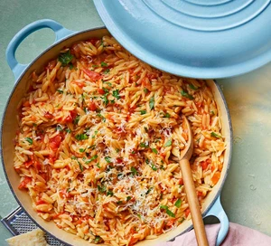

Orzo Bake

Description
Have a glut of tomatoes? Put them to good use in this one-pan orzo dish, perfect for a family midweek dinner. Finish with fresh parsley and plenty of parmesan
Ingredients
- 1 tbsp olive or rapeseed oil
- 1 red onion, finely chopped
- 2 garlic cloves, finely grated
- 1 chilli, deseeded and finely chopped
- 600g tomatoes, chopped
- 400g orzo
- 800ml vegetable stock
- handful of parsley, roughly chopped
- grated parmesan or vegetarian alternative, to serve (optional)
Steps
- Heat the oil in a large saucepan or frying pan over a medium heat and fry the onion for 4-6 mins until softened but not golden. Add the garlic and chilli, and cook for 1 min more to soften. Stir in the tomatoes and cook for 5 mins until starting to break down.
- Stir in the orzo, then pour in the stock. Cook for 8-10 mins until the liquid has reduced and the orzo is tender – add a few tablespoons of water if it begins to dry out. Scatter in three-quarters of the parsley and stir this through before serving in bowls topped with the remaining parsley and a grating of parmesan, if you like.